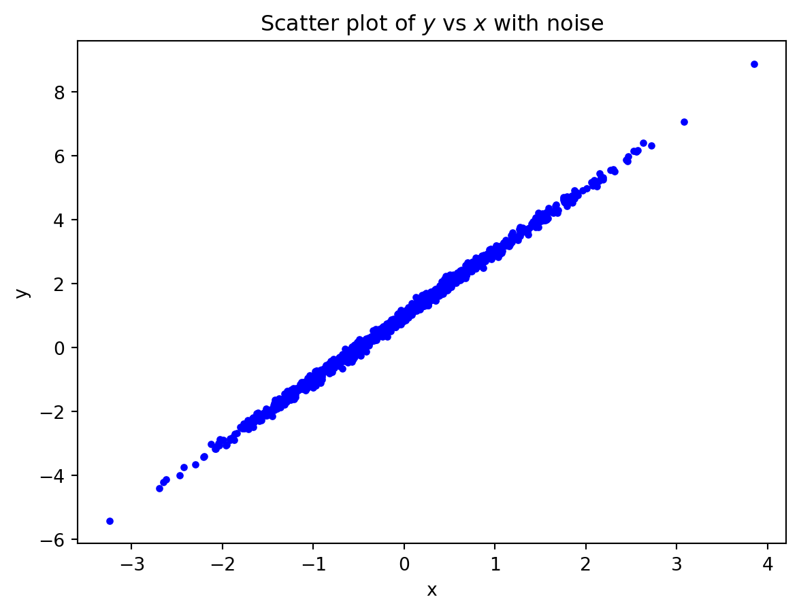
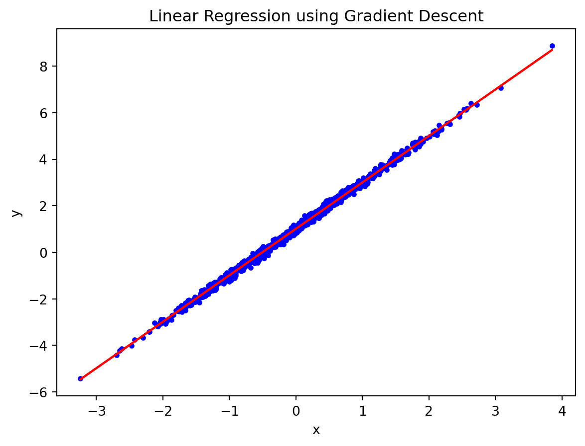

In this post, I will demonstrate how to implement a simple linear regression model using PyTorch.
Data Generation:
Generate \(n=1000\) data points from a linear model: \[y_i = b_0 + w_0 * x_i + \varepsilon_i\]
\(b_0 = 1\) and \(w_0 = 2\)
\(x_i \sim N(0, 1)\) and \(\varepsilon_i \sim N(0, 0.01)\)
import numpy as npimport matplotlib.pyplot as pltrng = np.random.RandomState(42)n =1000b0, w0 =1, 2x = rng.standard_normal(size=(n, 1))e =0.1* rng.standard_normal(size=(n, 1))y = b0 + x * w0 + eprint('true weight:', w0)print('true bias:', b0)plt.plot(x, y, 'b.')plt.xlabel('x')plt.ylabel('y')plt.title(r'Scatter plot of $y$ vs $x$ with noise')plt.show()
true weight: 2
true bias: 1

Solve Linear Regression by Gradient Descent in NumPy
Step 1: Given weight \(w\) and bias \(b\), compute prediction (Forward pass): \[\hat{y}_{i} = b + w x_{i}\]
Step 2: compute the loss: \[
L(w,b)
= \frac1n \sum_{i=1}^n (y_i - \hat y_i)^2
= \frac1n \sum_{i=1}^n (y_i - b - w * x_i)^2
\]
Step 3: compute the gradients (backward pass): \[
\frac{\partial L}{\partial w}
= -\frac{2}{n} \sum_{i=1}^n (y_i - b - w x_i) x_i
= -\frac{2}{n} \sum_{i=1}^n (y_i - \hat y_i) x_i
\]\[
\frac{\partial L}{\partial b}
= -\frac{2}{n} \sum_{i=1}^n (y_i - b - w x_i)
= -\frac{2}{n} \sum_{i=1}^n (y_i - \hat y_i)
\]
Step 4: update the parameters: \[
w \leftarrow w - \eta \frac{\partial L}{\partial w}\]\[
b \leftarrow b - \eta \frac{\partial L}{\partial b}
\]
# initialization of weight and biasw = rng.standard_normal(1)b = rng.standard_normal(1)print('Initial bias:', b)print('Initial weight:', w)lr =0.01# learning raten_epochs =1000# number of iterationsfor t inrange(n_epochs):# step 1: prediction y_pred = b + w * x# step 2: compute loss loss = np.mean((y - y_pred) **2)# step 3: compute gradients dw =-2* np.mean(x * (y - y_pred)) db =-2* np.mean(y - y_pred)# step4: update weights and bias w -= lr * dw b -= lr * dbprint('Final bias:', b)print('Final weight:', w)# plot the resultsplt.plot(x, y, 'b.')plt.plot(x, b + x * w, 'r-')plt.xlabel('x')plt.ylabel('y')plt.title('Linear Regression using Gradient Descent')plt.show()
Initial bias: [-0.14451867]
Initial weight: [-0.67517827]
Final bias: [1.00716318]
Final weight: [1.99588476]

Solve Linear Regression with PyTorch (autograd)
# using pytorchimport torchimport torch.optim as optimimport torch.nn as nntorch.manual_seed(42) # for reproducibilitydevice = torch.device('cuda'if torch.cuda.is_available() else'cpu')# convert data to torch tensorsx_tensor = torch.from_numpy(x).float().to(device)y_tensor = torch.from_numpy(y).float().to(device)lr =0.1n_epochs =1000# initial weights and biasb = torch.randn(1, requires_grad=True, device=device)w = torch.randn(1, requires_grad=True, device=device)for t inrange(n_epochs):# step 1: prediction y_hat = b + w * x_tensor# step 2: compute loss error = y_tensor - y_hat loss = torch.mean(error **2)# step 3: compute gradients (via autograd) loss.backward()# step 4: update weights and biaswith torch.no_grad(): b -= lr * b.grad w -= lr * w.grad b.grad.zero_() w.grad.zero_()print('Final bias (PyTorch):', b)print('Final weight (PyTorch):', w)
Final bias (PyTorch): tensor([1.0072], requires_grad=True)
Final weight (PyTorch): tensor([1.9959], requires_grad=True)
Solve Linear Regression with PyTorch (autograd + loss + optimizer)
b = torch.randn(1, requires_grad=True, dtype=torch.float, device=device)w = torch.randn(1, requires_grad=True, dtype=torch.float, device=device)lr =0.01n_epochs =1000loss_fn = nn.MSELoss(reduction='mean')optimizer = optim.SGD([b, w], lr=lr)for t inrange(n_epochs):# step 1: prediction y_hat = b + w * x_tensor# step 2: compute loss loss = loss_fn(y_tensor, y_hat)# step 3: clear old and compute current gradients loss.backward() # compute gradients# step 4: update weights and bias using the specified optimizer (e.g. SGD) optimizer.step()# clear gradients for the next iteration optimizer.zero_grad()print('Final bias (PyTorch with optim):', b)print('Final weight (PyTorch with optim):', w)
Final bias (PyTorch with optim): tensor([1.0072], requires_grad=True)
Final weight (PyTorch with optim): tensor([1.9959], requires_grad=True)
Object-oriented programming
import torchimport torch.nn as nndevice = torch.device("cuda"if torch.cuda.is_available() else"cpu")class LinearRegression(nn.Module):def__init__(self):super().__init__()# Initialize parametersself.b = nn.Parameter(torch.randn(1, device=device)) self.w = nn.Parameter(torch.randn(1, device=device)) def forward(self, x):# Forward pass: compute predicted yreturnself.b +self.w * x# Create modelmodel = LinearRegression().to(device)# define the loss function and optimizerlr =0.01n_epochs =1000loss_fn = nn.MSELoss(reduction='mean')optimizer = optim.SGD(model.parameters(), lr=lr)for t inrange(n_epochs): model.train()# step 1: makd prediction (forward pass) y_hat = model(x_tensor)# step 2: compute loss loss = loss_fn(y_tensor, y_hat)# step 3: compute gradients (via autograd) loss.backward()# step 4: update parameters via an optimizer (e.g. SGD) optimizer.step() # clear gradients for the next iteration optimizer.zero_grad()print(model.state_dict())print('Final bias (class + PyTorch):', model.b.item())print('Final weight (class + PyTorch):', model.w.item())
OrderedDict({'b': tensor([1.0072]), 'w': tensor([1.9959])})
Final bias (class + PyTorch): 1.0071604251861572
Final weight (class + PyTorch): 1.9958817958831787
Create Linear Model via nn.Sequential
lr =0.01n_epochs =1000model = nn.Sequential(nn.Linear(1, 1)).to(device)loss_fn = nn.MSELoss(reduction='mean')optimizer = optim.SGD(model.parameters(), lr=lr)losses = []for t inrange(n_epochs): model.train()# step 1: make prediction (forward pass) y_hat = model(x_tensor)# step 2: compute loss loss = loss_fn(y_tensor, y_hat) losses.append(loss.item())# step 3: compute gradients (via autograd) loss.backward()# step 4: update parameters via an optimizer (e.g. SGD) optimizer.step() # clear gradients for the next iteration optimizer.zero_grad()print(model.state_dict())plt.plot(losses)plt.xlabel('Epochs')plt.ylabel('Loss')plt.title('Training Loss over Epochs')plt.show()
from torch.utils.data import Dataset, TensorDatasetclass myDataset(Dataset):def__init__(self, x, y):self.x = x_tensorself.y = y_tensordef__getitem__(self, index):returnself.x[index], self.y[index]def__len__(self):returnlen(self.x)train_data = myDataset(x_tensor, y_tensor)print('Length of train_data:', len(train_data))print('First item in train_data:', train_data[0])train_data1 = TensorDataset(x_tensor, y_tensor)print('Length of train_data1:', len(train_data1))print('First item in train_data1:', train_data1[0])
Length of train_data: 1000
First item in train_data: (tensor([0.4967]), tensor([2.1334]))
Length of train_data1: 1000
First item in train_data1: (tensor([0.4967]), tensor([2.1334]))
Solve Linear Regression with Dataset and Data Loader
from torch.utils.data import DataLoadertrain_loader = DataLoader(train_data, batch_size=50, shuffle=True)lr =0.01n_epochs =1000model = nn.Sequential(nn.Linear(1, 1)).to(device)loss_fn = nn.MSELoss(reduction='mean')optimizer = optim.SGD(model.parameters(), lr=lr)for t inrange(n_epochs):for x_batch, y_batch in train_loader: x_batch = x_batch.to(device) y_batch = y_batch.to(device) model.train()# step 1: make prediction (forward pass) y_hat = model(x_batch)# step 2: compute loss loss = loss_fn(y_batch, y_hat) losses.append(loss.item())# step 3: compute gradients (via autograd) loss.backward()# step 4: update parameters via an optimizer (e.g. SGD) optimizer.step() # clear gradients for the next iteration optimizer.zero_grad() print(model.state_dict())